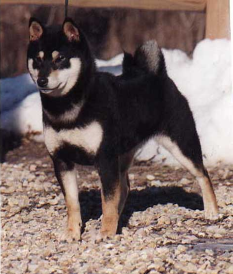

Shiba Inu Coat Colors
There are four different coat colors for the Shiba Inu:
Red Coat

Black and Tan Coat

Seasame Coat
Cream Coat

Click the group of Shibas to go back to the home page.
This is my home page for the Shiba Inu website.
The website will have links to the history and
health info of the Shiba Inu along with an
about page containing information about any changes
to the site.
There are four different coat colors for the Shiba Inu:
Red Coat
Black and Tan Coat
Seasame Coat
Cream Coat